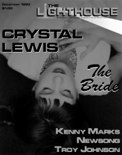

CMnexus: Contemporary Christian culture, music, and media.
|
|
Crystal LewisOn the cover|  | December 1993
The Lighthouse | Media coverage:- Feb 1988 in CCM "Notebook: Big Singer In A Small Package", by Kevin Allison
- Fall 1988 in Harvest Rock Syndicate "Crystal Lewis Dances", by Steve Netleton
- Apr 1989 in CCM "Taking The Joyful Road", by Thom Granger
- Dec 1992 in CCM "A Roundhouse Away From Home", by Thom Granger
- Nov 1993 in CCM "The Bride and The Boss", by Perucci Ferraiuolo
- Nov 1993 in CCM "Crystal Lewis"
- Dec 1993 in The Lighthouse "The Bride", by J. Warner Soditus
- Dec 1994 in CCM "In Concert: Theatre East, El Cajon, CA", by Mike Atkinson
- Jun 1995 in CCM "Crystal Lewis Remembers", by Jim Long
- Sep 1996 in CCM "In Concert: Caffe Milano, Nashville, TN", by Melanie Friebel
- Oct 1996 in CCM "Beauty Queen", by Jill Freeman
- May 1998 in CCM "Crystal's Cathedral", by Anthony DeBarros
- Dec 1998 in CCM "He Said, She Said", by Dave Urbanski
- Jun 2000 in CCM "Keeping the Faith", by Brian Quincy Newcomb
- Mar 2002 in CCM "10 Questions With: Crystal Lewis", by Kerry Maffeo
- Jan 2003 in CCM "'Crystal' Clear", by Lisa Tedder
- May 2003 in Christian Music Planet "Christian Music Moms", by Jenni Isaac
- 15 Sep 2015 in CCM Digital "Priority and Payoff", by Christina Fox
Albums & reviews:1987: Beyond the Charade1989: Joy1990: Let Love In1991: Simply the Best1992: Recuerda1992: Remember1993: The Bride1994: The Remix Collection1994: La Esposa1995: Hymns: My Life1995: Himnos De Mi Vida1995: Greatest Hits1996: Beauty for Ashes1996: La Belleza De La Cruz1998: Oro1998: Gold2000: Holiday! A Collection of Christmas Classics2000: La Colleccion2000: Fearless2001: More2002: Holy, Holy, Holy2002: More Live2005: See2011: Plain and Simple2014: 252015: Crystal Lewis Award Summary (Nominations / Wins)Dove Awards1998 Dove Awards- Female Vocalist
- Pop/Contemporary Recorded Song: "Beauty For Ashes"
- Spanish Language Album: La Belleza De La Cruz
1999 Dove Awards- Female Vocalist
- Spanish Language Album: Oro
2001 Dove Awards- Spanish Language Album: La Colleccion
Grammy AwardsBooks about Crystal Lewis |